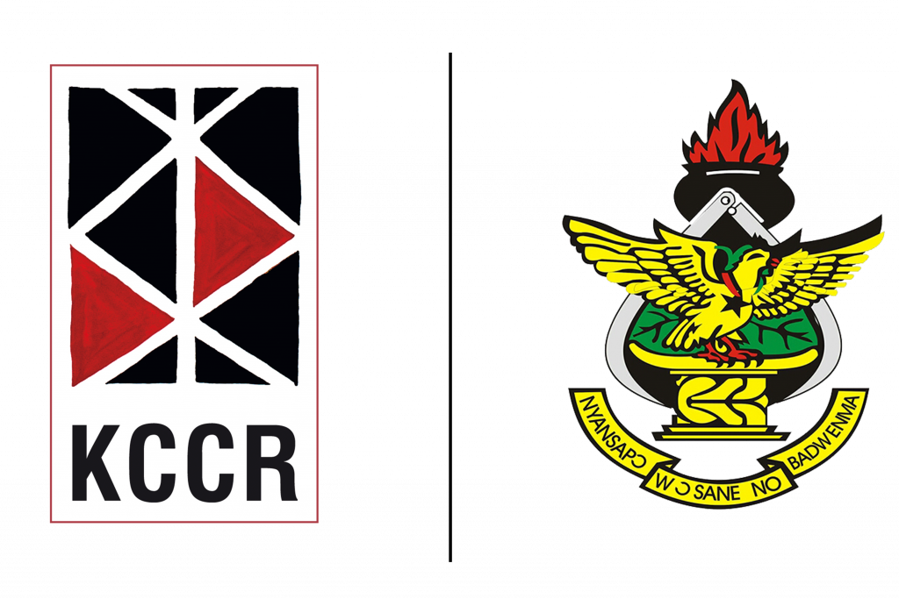

From Plasmodium biology and vector dynamics to machine-learning surveillance — and the P-TRANSMIT AI platform, a decision-support system for Ghana's malaria elimination agenda.
Malaria remains endemic across all 16 regions, with transmission shaped by rainfall, temperature, land use and health-system capacity. Ghana is a target country of the national malaria elimination agenda, making precise, timely surveillance the central operational challenge.
Tested at health facilities nationwide (NMCP reporting)
Malaria consistently ranks among top outpatient reasons
Children under five and pregnant women bear most severe disease
Forest, coastal and northern savannah zones differ in seasonality
| Species | Global / Ghanaian role | Key biological traits | Surveillance relevance |
|---|---|---|---|
| P. falciparum | Dominant worldwide and in Ghana (>95% of cases) | High parasitaemia, cytoadherence, severe disease; ~72-hr erythrocytic cycle | Primary target for forecasting & resistance-genomics modules |
| P. vivax | Rare in Ghana; major burden in Asia & Americas | Dormant liver hypnozoites → relapses weeks–months later | Relapse dynamics are a classic time-series modelling challenge |
| P. malariae | Low prevalence, often co-infections | Quotidian/quartan cycle; chronic low-grade parasitaemia | Long incubation complicates case-attribution models |
| P. ovale | Sparse; West Africa coastal presence | Hypnozoite relapses like vivax; mild fever episodes | Species-mixing affects case-definition in datasets |
~23 Mb across 14 chromosomes, ~5,300 genes — small enough for full population-genomic surveillance, large enough to hide resistance and immune-evasion variants.
Human liver → blood stages → gametocytes → Anopheles midgut → sporozoites → saliva. Each stage is a potential modelling & intervention point.
Parasite population structure, gene flow and marker frequencies vary by geography — exactly the high-dimensional, spatiotemporal data where ML outperforms tables.
Weekly case counts are the visible output of a coupled human–parasite–mosquito–environment system. Any serious forecasting model must ingest the drivers below.
Rainfall & lag, temperature, humidity, vegetation (NDVI), surface water — control breeding-site availability.
An. gambiae s.l., An. funestus, An. coluzzii; biting rates, insecticide resistance, vectorial capacity.
Gametocyte carriage, genotype diversity, drug-resistant lineages modifying infectiousness.
ITN usage, mobility, urbanization, reporting artefacts, health-seeking behaviour, holidays.
Weekly confirmed cases per region/district — the series our models learn to predict.
Southern Ghana: two rainfall peaks → bimodal transmission. Northern Ghana: single wet season → one long peak with high amplitude. Models must capture phase and amplitude by region.
Rainfall affects cases weeks later (breeding → larval development → adult emergence → EIP → case). Typical useful lags: 2–8 weeks. This is why autoregressive + environmental feature models win.
Gradient-boosted trees (XGBoost) and Random Forests for tabular spatiotemporal data; ridge/elastic-net baselines for transparency; LSTMs & transformer time-series models emerging; CNNs on satellite imagery for breeding-site mapping; Bayesian ensembles for uncertainty.
Models learn associations in the data they are given. Garbage in, garbage out — data quality, honest validation and human review are non-negotiable. This principle is engineered into P-TRANSMIT AI.
Indicative synthesis of the 2015–2025 literature (mapping/forecasting reviews, WHO & GRID-style surveillance reports). Bar length = relative prevalence in studies; exact proportions vary by review.
Spatiotemporal risk mapping (Malaria Atlas Project-style), seasonal outbreak forecasting at district level, climate-driven early warning.
Real-time dashboards integrated with DHIS2, drone + CNN larval-habitat surveys, mobile phone mobility features, drug-resistance marker trend models.
Few deployable African-built platforms; poor model documentation; rare external validation; limited genomic + case data fusion. P-TRANSMIT targets exactly these gaps.
Weekly confirmed cases by region/district (DHIS2-style exports). The target variable for forecasting.
Rainfall, temperature, humidity, NDVI — satellite-derived (CHIRPS, ERA5, MODIS). The leading indicators.
Variant calls, marker tables, sample metadata from KCCR sequencing pipelines. Molecular surveillance layer.
Molecular marker frequencies + treatment-outcome studies (SMART-style protocols), never conflated with genomics alone.
geoBoundaries ADM1/ADM2 shapefiles, population rasters (WorldPop) for rate denominators.
Auto-profiling, missingness reports, fuzzy region matching, explicit column mapping, no silent imputation, synthetic data permanently flagged.
Case lags (1–4 weeks) · rolling means · rainfall & temperature at lags 2–8 weeks · seasonality encodings (week-of-year harmonics) · region identifiers · population-normalised rates. Each feature is documented, versioned and auditable — provenance is a first-class citizen.
A locally-hosted web platform (FastAPI + React) built for Ghanaian surveillance workflows — every prediction accompanied by provenance, metrics and explicit limitations.
National KPIs, risk map, forecast bars, explainability at a glance.
Train & forecast weekly cases at 1/2/4/8-week horizons with held-out metrics.
Interactive choropleth: risk, observed cases, forecast medians.
Marker tables, regional frequencies, validated marker catalogue.
SMART-style resistance surveillance scaffolding with strict guardrails.
Model-generated signals with evidence, severity & review workflow.
Upload CSV/Excel/JSON, quality profiling, region fuzzy-matching.
Model zoo, seeds, temporal validation, full provenance registry.
One-click reproducibility-oriented markdown reports.
System status, scientific governance charter, audit transparency.
Weekly series per region; quality checks; nothing imputed silently.
Case lags 1–4, environmental covariates, seasonality harmonics.
Random Forest · XGBoost · Ridge — per horizon (+1, +2, +4, +8 wk).
Strict chronological split — the model never sees the future.
Predictions + intervals + permutation feature importance.
Trees for nonlinearity, boosting for accuracy, ridge as an honest interpretable baseline.
+1 wk ops · +2 wk tactical · +4 wk planning · +8 wk strategic.
Time-series folds walk forward in time; MAE / RMSE / sMAPE reported on held-out weeks only.
Permutation importance on held-out data shows which features drove each prediction — e.g. lag-1 cases and recent rainfall typically dominate. The platform states plainly: these are associations, not causal effects.
Environmental-suitability surfaces (rainfall anomalies, NDVI greening, surface-water indices) and surveillance-coverage layers will join the map, moving the platform from case-conditional to environment-forward prediction.
The platform enforces a strict epistemic rule:
A detected genetic marker is NOT phenotypic drug resistance.
Interpretation thresholds are researcher-supplied (WHO / published definitions). The platform never invents them.
Machine learning over genomic features — geographic assignment of parasite populations, marker-frequency trend forecasting, and fusion models joining genomic signals with case forecasts — unlocks true integrated molecular-epidemiological intelligence.
Full lineage from uploaded file → feature matrix → trained artifact → forecast row.
Region-relative risk framing avoids penalising low-reporting districts; gaps in coverage are reported, not hidden.
One-click research report regenerates the full analysis trail for peer review.
A nationally trusted, locally hosted AI surveillance companion that shortens the distance between data → signal → field action — built in Ghana, by Ghanaian institutions, for the elimination agenda.
The parasite is ancient; our response can be modern. With disciplined data, honest validation and human primacy, machine learning turns routine surveillance into foresight.
Transmission is spatiotemporal — models must respect time, space and lags. Temporal validation is non-negotiable.
Markers ≠ resistance; predictions ≠ diagnoses. Guardrails make AI usable in public health.
Local ownership matters — locally hosted, locally governed, built for Ghana's workflows.
Kumasi Centre for Collaborative Research in Tropical Medicine (KCCR) · Kwame Nkrumah University of Science and Technology (KNUST) · Ghana NMCP & regional health directorates (data partners, Phase 3) · mosquito & parasite imagery courtesy of open-science repositories.
Questions & live demonstration welcome. · Platform: http://localhost:4173